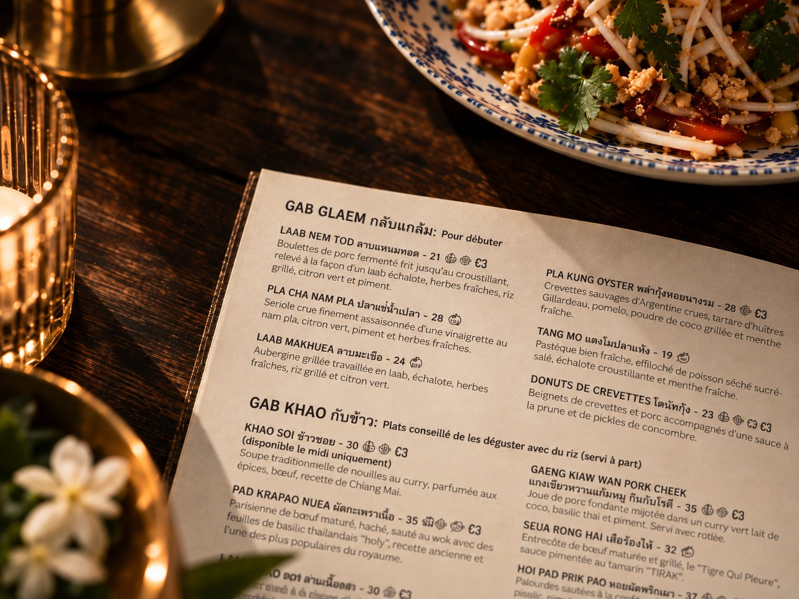
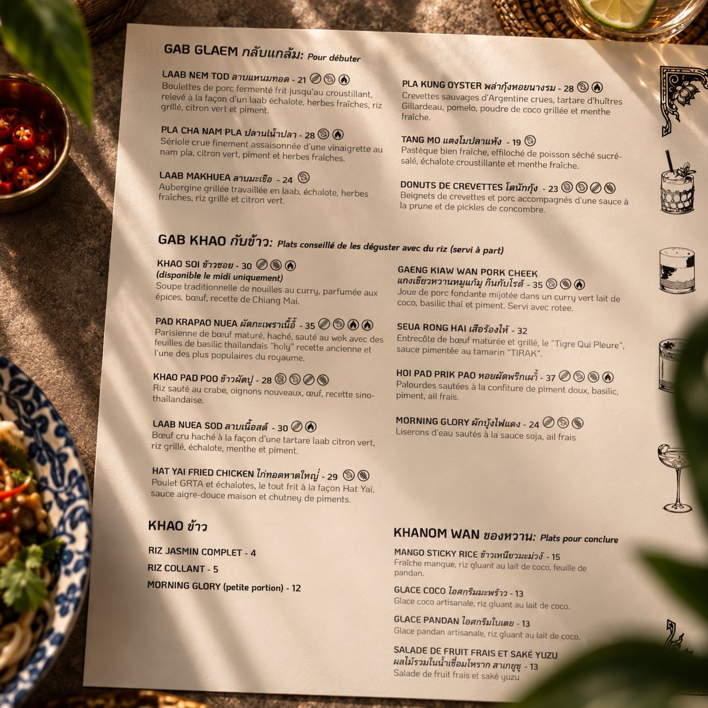
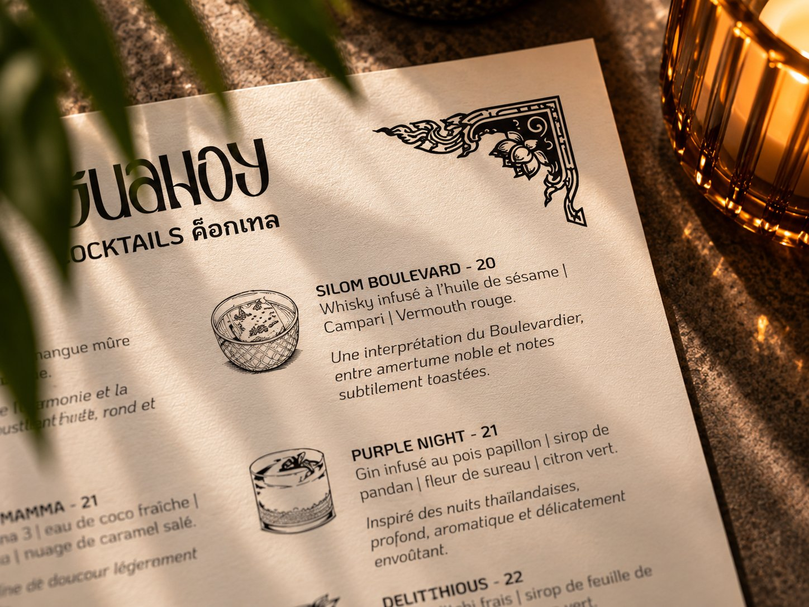
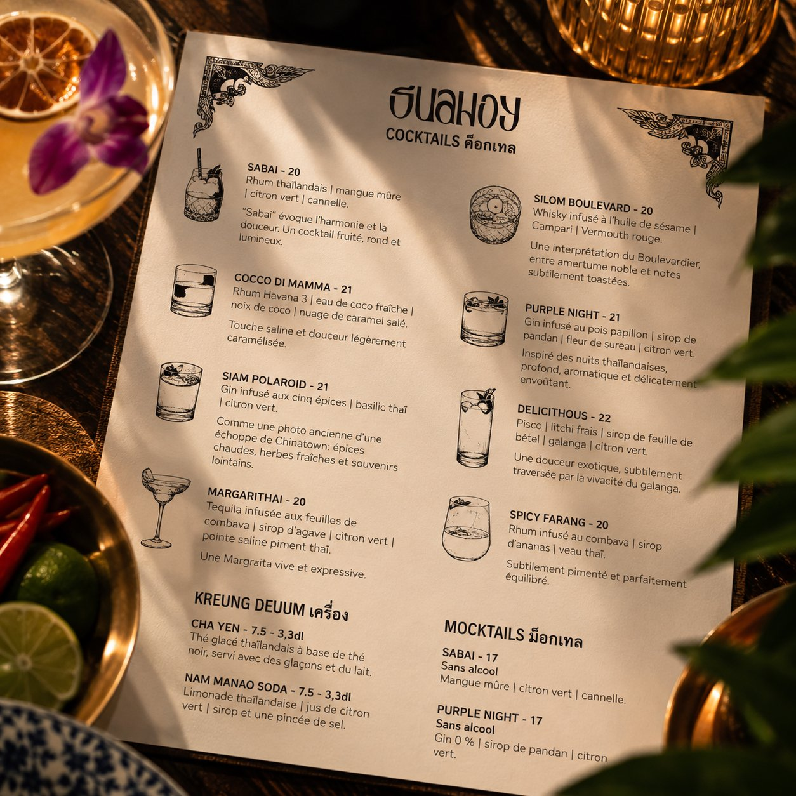
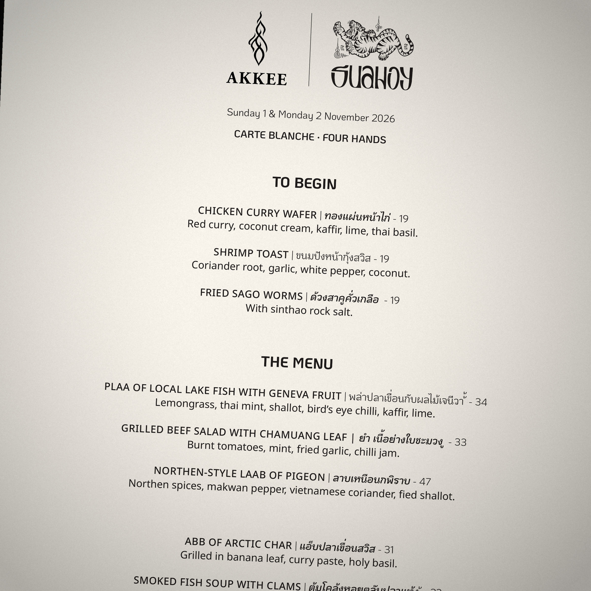
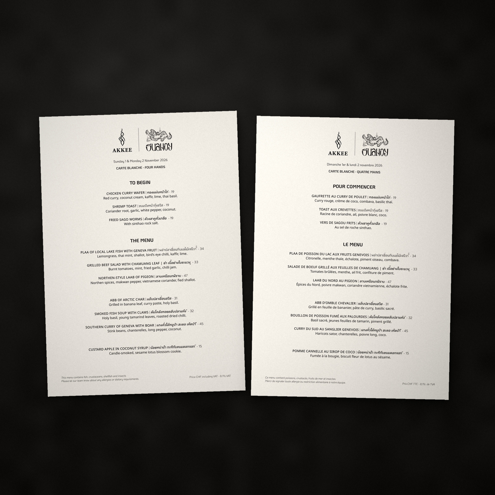
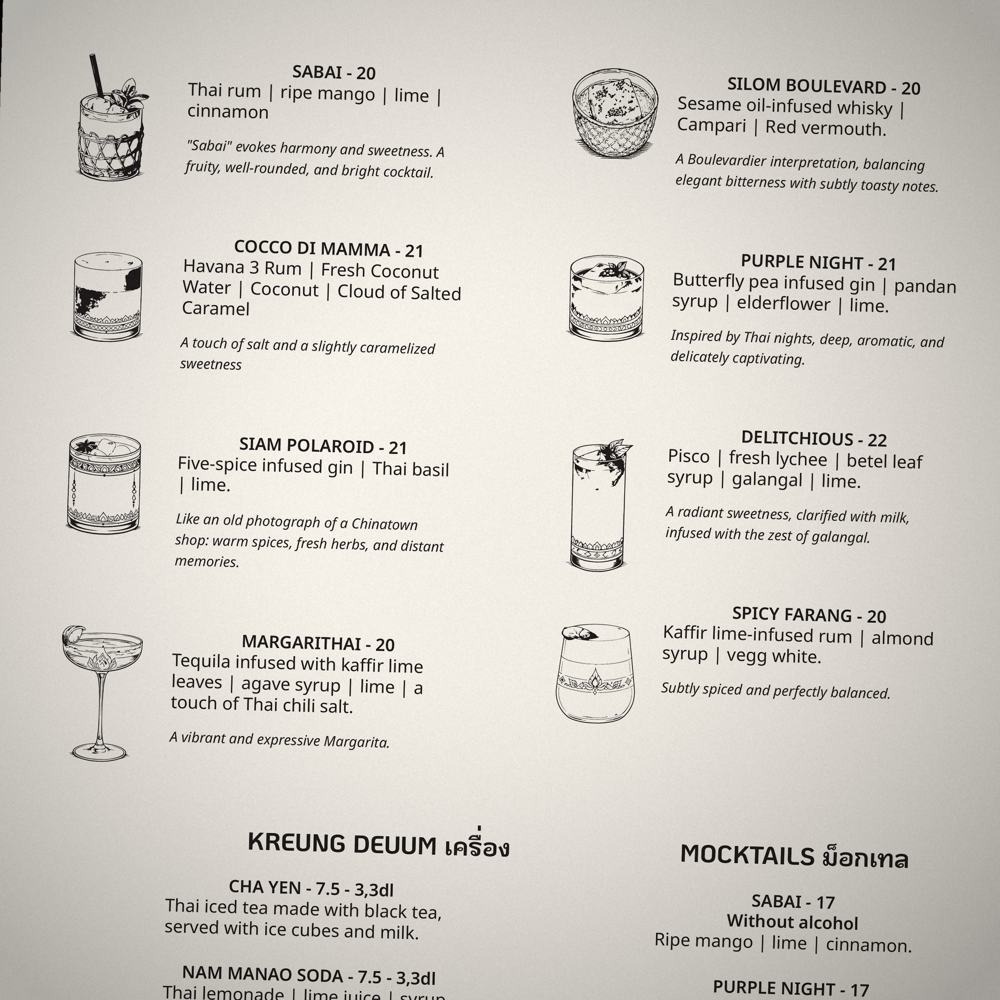
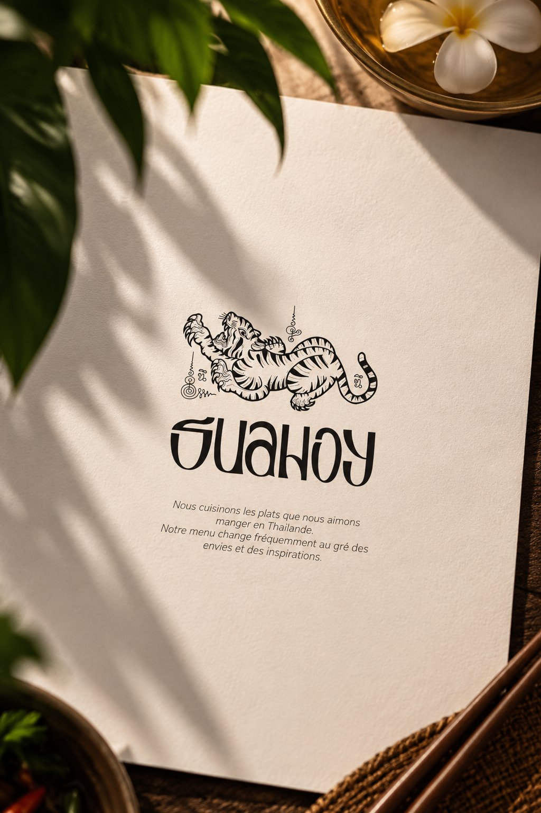

Suahoy
Redesign e layout menu per la stampa

Un menu che parla la lingua del ristorante
Suahoy è un ristorante thai con base a Ginevra — elegante, con un'identità visiva che richiama la tradizione thailandese. Avevano bisogno di un redesign del menu: una nuova organizzazione delle informazioni, l'adattamento dei nuovi piatti e l'aggiunta di illustrazioni dedicate alla sezione dei drink. Il lavoro non era reinventare l'identità — era farla funzionare meglio.
"Rispettare un'identità esistente è più difficile che crearne una nuova. Significa entrare nel linguaggio di qualcun altro e parlarlo come se fosse il tuo."



Dal menu di sala alla carte blanche
Il redesign del menu di Suahoy ha preso due formati: gli A3 in francese e in inglese del ristorante, e l'A4 per la cena a quattro mani con Akkee, chef thailandese con una stella Michelin, il 1 e 2 novembre 2026.
Per l'evento il committente chiedeva un design minimale, pulito e molto semplice: i due loghi affiancati, la lista dei piatti, i nomi anche in thailandese. Le illustrazioni della carta dei cocktail sono quelle disegnate per il menu originale.




Due lingue, un solo sistema
Il risultato sono due menu in formato A3 — uno in francese, uno in inglese — pronti per la stampa. Il cliente resta autonomo nella gestione: può stampare quando vuole, dove vuole, senza dipendere da nessuno. Le illustrazioni dei drink, realizzate mantenendo lo stile del ristorante, aggiungono un livello di cura senza rompere la coerenza del sistema.
